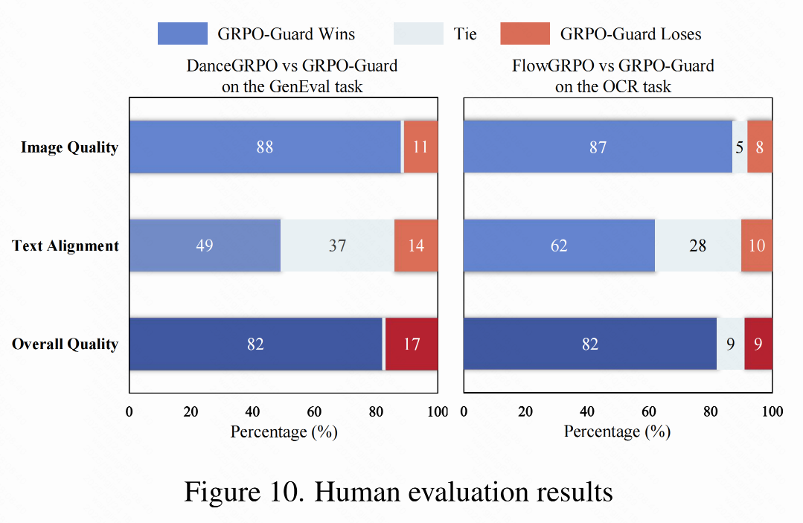

Overview
GRPO-Guard mitigates implicit over-optimization in FlowGRPO, preventing degradation of image quality. Watch our video presentation for a quick summary of our key contributions.
Abstract
Recently, GRPO-based reinforcement learning has shown remarkable progress in optimizing flow-matching models, effectively improving their alignment with task-specific rewards. Within these frameworks, the policy update relies on importance-ratio clipping to constrain overconfident positive and negative gradients. However, in practice, we observe a systematic shift in the importance-ratio distribution—its mean falls below 1 and its variance differs substantially across timesteps. This left-shifted and inconsistent distribution prevents positive-advantage samples from entering the clipped region, causing the mechanism to fail in constraining overconfident positive updates. As a result, the policy model inevitably enters an implicit over-optimization stage—while the proxy reward continues to increase, essential metrics such as image quality and text–prompt alignment deteriorate sharply, ultimately making the learned policy impractical for real-world use. To address this issue, we introduce GRPO-Guard, a simple yet effective enhancement to existing GRPO frameworks. Our method incorporates ratio normalization, which restores a balanced and step-consistent importance ratio, ensuring that PPO clipping properly constrains harmful updates across denoising timesteps. In addition, a gradient reweighting strategy equalizes policy gradients over noise conditions, preventing excessive updates from particular timestep regions. Together, these designs act as a regulated clipping mechanism, stabilizing optimization and substantially mitigating implicit over-optimization without relying on heavy KL regularization. Extensive experiments on multiple diffusion backbones (e.g., SD3.5M, Flux.1-dev) and diverse proxy tasks demonstrate that GRPO-Guard significantly reduces over-optimization while maintaining or even improving generation quality. These results highlight GRPO-Guard as a robust and general solution for stable policy optimization in flow-matching models.
The Problem: When Reward Goes Up, Quality Goes Down
In standard GRPO frameworks, the model quickly enters an over-optimization phase. The proxy reward (e.g., text accuracy) keeps increasing, but the true "gold" reward (human-perceived quality) plummets. This results in visually corrupted images, loss of detail, and strange artifacts, making the models unusable in practice. Below are examples of this failure mode.
Visual comparison on the GenEval and OCR tasks. While FlowGRPO and DanceGRPO show severe quality degradation and fail to follow instructions, our GRPO-Guard (third and fifth rows) maintains high fidelity and instruction-following capabilities.
Our Solution: Restoring Balance to Training
GRPO-Guard tackles the root cause of reward hacking with two key components. First, Ratio Normalization corrects the distribution of importance-sampling ratios, ensuring the clipping mechanism functions as intended. Second, Gradient Reweighting balances updates across all timesteps, preventing the model from focusing too heavily on a single noise level.
Up (FlowGRPO): The importance ratio distribution is shifted and inconsistent, disabling the clipping mechanism. Down (GRPO-Guard): Our method restores a balanced and stable distribution, enabling proper optimization.
Visual Comparisons
Preventing Over-optimization During Training
The following shows how image quality evolves during training. FlowGRPO quickly degenerates, while our method produces consistently high-quality results.

Comparison at different training steps. Top row is FlowGRPO, bottom row is ours.
Preserving Human Likeness
When optimizing for aesthetic scores, baseline methods often distort human proportions and reduce facial diversity. GRPO-Guard avoids this, preserving realistic body structures.

Comparison of human likeness preservation. Top row is FlowGRPO, bottom row is ours.
Human Evaluation
We conducted a human preference evaluation, and the results clearly demonstrate the superiority of GRPO-Guard in image quality, text alignment, and overall preference.
Win/tie/lose ratios comparing GRPO-Guard against baseline methods. Our method is strongly preferred by human evaluators.
Citation
If you find our work useful, please consider citing: